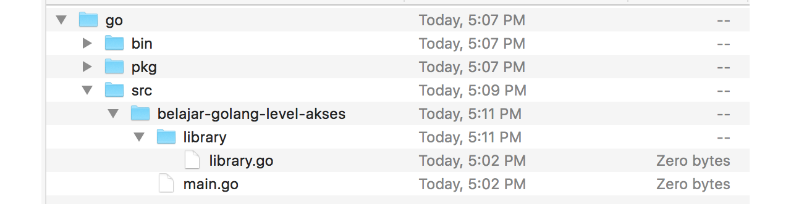
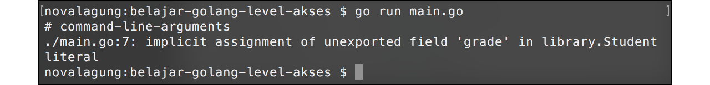
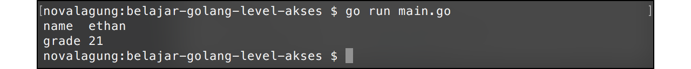
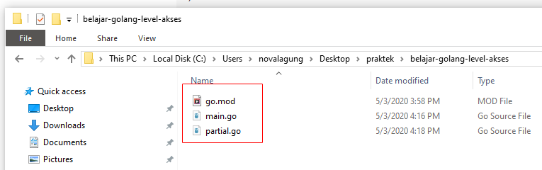

A.25. Properti Public dan Private (Exported vs Unexported)
Bab ini membahas mengenai property modifier public dan private dalam Go. Kapan sebuah struct, fungsi, atau method bisa diakses dari package lain dan kapan tidak.
Di Go sebenarnya tidak ada istilah public modifier dan private modifier. Yang ada adalah exported yang kalau di bahasa lain ekuivalen dengan public modifier, dan unexported untuk private modifier.
A.25.0. PERINGATAN
Peringatan ini ditulis karena sudah terlalu banyak email yang penulis dapati, perihal error yang muncul ketika mempraktekan beberapa kode pada bab ini.
Bab ini memiliki beberapa perbedaan dibanding lainnya. Jika pembaca mengikuti secara berurutan, membaca penjelasan dan pembahasan yang sudah tertulis, maka pasti akan mendapati 3 buah error. Di tiap-tiap error, sebenarnya sudah terlampir:
- Screenshot error
- Penjelasan penyebab error
- Cara resolve atau solusi dari ketiga error tersebut.
Kesimpulan dari email-email yang penulis dapati: pembaca bingung karena mendapati error, dan tidak tau cara mengatasi error tersebut. Padahal sudah ada keterangan yang jelas bahwa error tersebut pasti muncul, dan juga sudah dijelaskan cara mengatasinya. Ini kemungkinan besar disebabkan karena pembaca hanya copy-paste source code, tanpa membaca penjelasan-penjelasan yang padahal sudah tertulis cukup mendetail.
Oleh karena itu, JANGAN CUMA COPAS SOURCE KODE, BACA, PELAJARI, DAN PAHAMI! No hard feeling 👌😁
A.25.1. Exported Package dan Unexported Package
Pengembangan aplikasi dalam real development pasti membutuhkan banyak sekali file program. Tidak mungkin dalam sebuah project semua file memiliki nama package main, biasanya akan dipisah sebagai package berbeda sesuai bagiannya.
Project folder selain berisikan file-file .go juga bisa berisikan sub-folder lainnya. Di Go, setiap folder atau sub-folder adalah satu package, file-file yang ada di dalam sebuah folder package-nya harus sama. Dan package pada file-file tersebut harus berbeda dengan package pada file-file lainnya yang berada pada folder berbeda.
Jadi mudahnya, 1 folder adalah 1 package.
Dalam sebuah package, biasanya kita menulis sangat banyak komponen, entah itu fungsi, struct, variabel, atau lainnya. Komponen tersebut bisa leluasa digunakan dalam package yang sama. Contoh sederhananya seperti program yang telah kita praktekan di bab sebelum-sebelumnya, dalam package main ada banyak yang di-define: fungsi, variabel, closure, struct, dan lainnya; kesemuanya bisa langsung dimanfaatkan.
Jika dalam satu program terdapat lebih dari 1 package, atau ada package lain selain main, maka komponen dalam package lain tersebut tidak bisa diakses secara bebas dari file yang package-nya main, karena tiap komponen memiliki hak akses.
Ada 2 jenis hak akses di Go:
- Hak akses Exported atau public. Menandakan komponen tersebut diperbolehkan untuk diakses dari package lain yang berbeda
- Hak akses Unexported atau private. Berarti komponen hanya bisa diakses dalam package yang sama, bisa dalam satu file saja atau dalam beberapa file yang masih 1 folder.
Penentuan hak akses yang tepat untuk tiap komponen sangatlah penting.
Di Go cara menentukan level akses atau modifier sangat mudah, penandanya adalah character case huruf pertama nama fungsi, struct, variabel, atau lainnya. Ketika namanya diawali dengan huruf kapital menandakan kalau exported (atau public). Dan sebaliknya, jika diawali huruf kecil, berarti unexported (atau private).
A.25.2. Penggunaan Package, Import, Dan Hak Akses Exported dan Unexported
Agar lebih mudah dipahami, maka langsung saja kita praktekan.
Pertama buat folder proyek baru bernama belajar-golang-level-akses, inisialisasi sebagai projek dengan nama yang sama. Kemudian buat file baru bernama main.go di dalamnya, lalu set nama package file tersebut sebagai main.
Kemudian, buat sub-folder baru bernama library di dalam folder belajar-golang-level-akses. Didalam folder library, buat file baru library.go, set nama package-nya library.

Buka file library.go lalu isi dengan kode berikut.
package library
import "fmt"
func SayHello() {
fmt.Println("hello")
}
func introduce(name string) {
fmt.Println("nama saya", name)
}
File library.go yang telah dibuat ditentukan nama package-nya adalah library (sesuai dengan nama folder), berisi dua buah fungsi, SayHello() dan introduce().
- Fungsi
SayHello(), level aksesnya adalah publik, ditandai dengan nama fungsi diawali huruf besar. - Fungsi
introduce()dengan level akses private, ditandai oleh huruf kecil di awal nama fungsi.
Selanjutnya kita lakukan tes apakah memang fungsi yang ber-modifier private dalam package library tidak bisa diakses dari package lain.
Buka file main.go, lalu tulis kode berikut.
package main
import "belajar-golang-level-akses/library"
func main() {
library.SayHello()
library.introduce("ethan")
}
Bisa dilihat bahwa package library yang telah dibuat tadi, di-import ke dalam package main.
Folder utama atau root folder dalam project yang sedang digarap adalah belajar-golang-level-akses, sehingga untuk import package lain yang merupakan subfolder, harus dituliskan lengkap path folder nya, seperti belajar-golang-level-akses/library.
Penanda root folder adalah tempat dimana file go.mod berada.
Ok, kita lanjut. Perhatikan kode berikut.
library.SayHello()
library.introduce("ethan")
Cara pemanggilan fungsi yang berada dalam package lain adalah dengan menuliskan nama package target diikut dengan nama fungsi menggunakan dot notation atau tanda titik, seperti library.SayHello() atau library.introduce("ethan")
OK, sekarang coba jalankan kode yang sudah disiapkan di atas, hasilnya error.
Error di atas disebabkan karena fungsi introduce() yang berada dalam package library memiliki level akses undexported (atau private), fungsi ini tidak bisa diakses dari package lain (pada kasus ini main). Agar bisa diakses, solusinya bisa dengan menjadikannya ke bentuk exported (atau public), atau diubah cara pemanggilannya. Disini kita menggunakan cara ke-2.
Tambahkan parameter name pada fungsi SayHello(), lalu panggil fungsi introduce() dengan menyisipkan parameter name dari dalam fungsi SayHello().
func SayHello(name string) {
fmt.Println("hello")
introduce(name)
}
Di main, cukup panggil fungsi SayHello() saja, sisipkan sebuah string sebagai parameter.
func main() {
library.SayHello("ethan")
}
Coba jalankan lagi.
A.25.3. Penggunaan Hak Akses Exported dan Unexported pada Struct dan Propertinya
Level akses exported (atau public) dan unexported (atau private) juga bisa diterapkan di fungsi, struct, method, maupun property variabel. Cara penggunaannya sama seperti pada pembahasan sebelumnya, yaitu dengan menentukan character case huruf pertama nama komponen, apakah huruf besar atau kecil.
Belajar tentang level akses di Go akan lebih cepat jika langsung praktek. Oleh karena itu langsung saja. Hapus isi file library.go, buat struct baru dengan nama student didalamnya.
package library
type student struct {
Name string
grade int
}
Buat contoh sederhana penerapan struct di atas pada file main.go.
package main
import "belajar-golang-level-akses/library"
import "fmt"
func main() {
var s1 = library.student{"ethan", 21}
fmt.Println("name ", s1.Name)
fmt.Println("grade", s1.grade)
}
Setelah itu jalankan program.
Error muncul lagi, kali ini penyebabnya adalah karena struct student masih di set sebagai unexported. Ganti ke bentuk exported dengan cara mengubah huruf awalnya menjadi huruf besar, kemudian jalankan ulang.
// pada library/library.go
type Student struct {
Name string
grade int
}
// pada main.go
var s1 = library.Student{"ethan", 21}
fmt.Println("name ", s1.Name)
fmt.Println("grade", s1.grade)
Output:

Error masih tetap muncul, tapi kali ini berbeda. Error yang baru ini disebabkan karena salah satu properti dari struct Student adalah unexported. Properti yg dimaksud adalah grade. Ubah ke bentuk exported, lalu jalankan lagi.
// pada library/library.go
type Student struct {
Name string
Grade int
}
// pada main.go
var s1 = library.Student{"ethan", 21}
fmt.Println("name ", s1.Name)
fmt.Println("grade", s1.Grade)
Dari contoh program di atas, bisa disimpulkan bahwa untuk menggunakan struct yang berada di package lain, selain nama stuct-nya harus berbentuk exported, properti yang diakses juga harus exported juga.

A.25.4. Import Dengan Prefix Tanda Titik
Seperti yang kita tahu, untuk mengakses fungsi/struct/variabel yg berada di package lain, nama package nya perlu ditulis, contohnya seperti pada penggunaan penggunaan library.Student dan fmt.Println().
Di Go, komponen yang berada di package lain yang di-import bisa dijadikan se-level dengan komponen package peng-import, caranya dengan menambahkan tanda titik (.) setelah penulisan keyword import. Maksud dari se-level disini adalah, semua properti di package lain yg di-import bisa diakses tanpa perlu menuliskan nama package, seperti ketika mengakses sesuatu dari file yang sama.
import (
. "belajar-golang-level-akses/library"
"fmt"
)
func main() {
var s1 = Student{"ethan", 21}
fmt.Println("name ", s1.Name)
fmt.Println("grade", s1.Grade)
}
Pada kode di atas package library di-import menggunakan tanda titik. Dengan itu, pemanggilan struct Student tidak perlu dengan menuliskan nama package nya.
25.5. Pemanfaatan Alias Ketika Import Package
Fungsi yang berada di package lain bisa diakses dengan cara menuliskan nama-package diikuti nama fungsi-nya, contohnya seperti fmt.Println(). Package yang sudah di-import tersebut bisa diubah namanya dengan cara menggunakan alias pada saat import. Contohnya bisa dilihat pada kode berikut.
import (
f "fmt"
)
func main() {
f.Println("Hello World!")
}
Pada kode di-atas, package fmt di tentukan aliasnya adalah f, untuk mengakses Println() cukup dengan f.Println().
A.25.6. Mengakses Properti Dalam File Yang Package-nya Sama
Jika properti yang ingin di akses masih dalam satu package tapi berbeda file, cara mengaksesnya bisa langsung dengan memanggil namanya. Hanya saja ketika eksekusi, file-file lain yang yang nama package-nya sama juga ikut dipanggil.
Langsung saja kita praktekan, buat file baru dalam belajar-golang-level-akses dengan nama partial.go.

Tulis kode berikut pada file partial.go. File ini kita set package-nya main (sama dengan nama package file main.go).
package main
import "fmt"
func sayHello(name string) {
fmt.Println("halo", name)
}
Hapus semua isi file main.go, lalu silakan tulis kode berikut.
package main
func main() {
sayHello("ethan")
}
Sekarang terdapat 2 file berbeda (main.go dan partial.go) dengan package adalah sama, main. Pada saat go build atau go run, semua file dengan nama package main harus dituliskan sebagai argumen command.
go run main.go partial.go
Fungsi sayHello pada file partial.go bisa dikenali meski level aksesnya adalah unexported. Hal ini karena kedua file tersebut (main.go dan partial.go) memiliki package yang sama.
Cara lain untuk menjalankan program bisa dengan perintah
go run *.go, dengan cara ini tidak perlu menuliskan nama file nya satu per satu.
A.25.6.1. Fungsi init()
Selain fungsi main(), terdapat juga fungsi spesial, yaitu init(). Fungsi ini otomatis dipanggil pertama kali ketika aplikasi di-run. Jika fungsi ini berada dalam package main, maka dipanggil lebih dulu sebelum fungsi main() dieksekusi.
Langsung saja kita praktekkan. Buka file library.go, hapus isinya lalu isi dengan kode berikut.
package library
import "fmt"
var Student = struct {
Name string
Grade int
}{}
func init() {
Student.Name = "John Wick"
Student.Grade = 2
fmt.Println("--> library/library.go imported")
}
Pada package tersebut, variabel Student dibuat dengan isi anonymous struct. Dalam fungsi init, nilai Name dan Grade variabel di-set.
Selanjutnya buka file main.go, isi dengan kode berikut.
package main
import "belajar-golang-level-akses/library"
import "fmt"
func main() {
fmt.Printf("Name : %s\n", library.Student.Name)
fmt.Printf("Grade : %d\n", library.Student.Grade)
}
Package library di-import, dan variabel Student dikonsumsi. Pada saat import package, fungsi init() yang berada didalamnya langsung dieksekusi.
Property variabel objek Student akan diisi dan sebuah pesan ditampilkan ke console.
Dalam sebuah package diperbolehkan ada banyak fungsi init() (urutan eksekusinya adalah sesuai file mana yg terlebih dahulu digunakan). Fungsi ini dipanggil sebelum fungsi main(), pada saat eksekusi program.